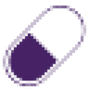

ExactCareAnewHealth is one of the nation’s leading pharmacy care management companies that specializes in caring for people with the most complex, chronic needs—wherever they call home. We enable better outcomes for patients and the healthcare organizations who support them. Established in 2023 through the combination of ExactCare and Tabula Rasa HealthCare, we provide a suite of solutions that includes comprehensive pharmacy services; full-service pharmacy benefit management; and specialized support services for Program of All-Inclusive Care for the Elderly. With over 1,400 team members, we care for more than 100,000 people across all 50 states.
Job Details
Pharmacy Technicians in our Patient Care Center of Excellence may hold multiple duties to ensure ExactCare’s patients receive quality care out of their pharmacy services. They will work in a closed-door pharmacy environment, spending their time speaking with patients, doctors and facilities on the phone in addition to the outlined job duties and responsibilities.
Job duties will vary from phone work and navigating multiple pharmacy software systems to supporting the various stages of patient care/contact. These areas of responsibility will fluctuate based on organizational needs, allowing the Pharmacy Technician to develop multiple skillsets.
This is a remote-based environment, allowing the Senior Pharmacy Technician to provide an exceptional patient experience. AnewHealth provides a fast-paced, high-energy environment, allowing Pharmacy Technicians to excel in many areas with a focus on phone-based pharmacy work.
Responsibilities
Act as a subject matter expert in assigned task(s) and/or functions
Providing an exceptional customer service experience each day in a phone-based environment.
Enter a high volume of data; processing prescription information with speed and accuracy.
Utilizing sound drug knowledge to effectively receive prescription authorizations, clarifications or transfers.
Perform claim adjudication and auditing duties such as prior authorizations, billing and eligibility checks. Requiring outbound calls to patients.
Working through current case queues to problem solve for patient care issues.
Serving as a liaison between the clinical pharmacists and other medical professionals on patients’ behalf.
Partner with technicians and pharmacists to ensure that new patients are successfully onboarded to ExactCare.
Maintaining patient records with strong attention to detail and confidentiality.
Accurate retrieval of all prescription information and verifying through doctor calls.
Placing welcome calls to newly onboarded patients and establish a trusted point of contact.
Placing outbound calls to patients to create, maintain or update their medication profiles.
Serve as backup support for times of higher patient call volume.
Effectively assist with patient questions over the phone.
Performing in a high volume, fast paced environment to support ExactCare’s nationwide patient base.
Embody AnewHealth’s Core Values in all communications and interactions.
Other duties as assigned.
The above essential functions are representative of major duties of positions in this job classification. Specific duties and responsibilities may vary based upon departmental needs. Other duties may be assigned similar to the above consistent with knowledge, skills and abilities required for the job. Not all of the duties may be assigned to a position.
Qualifications: These represent the desired qualifications of the ideal candidate. They are not meant to limit consideration for candidates who do not meet all of the standards listed. Reasonable accommodations may be made to enable individuals with disabilities to perform the essential functions.
Education
High school diploma/GED
Certified with the Pharmacy Technician Certification Board (PTCB) or the National Health Association (NHA) and maintain a current certificate
Must maintain a pharmacy technician registration with State Board of Pharmacy
Experience
Must be 18+ years of age
At least 2-3 years of prior experience in a pharmacy setting
Skills & Abilities
Comfortable working in a phone-based environment.
Ability to work independently.
Self-motivated and goal oriented.
Ability to utilize computer equipment, technology and work within multiple software programs to receive medication authorizations, clarifications and/or transfers.
Exceptional customer service skills; servicing doctor’s office, pharmacist, and patient needs over the phone.
Thorough drug knowledge.
Pharmacy billing knowledge.
Knowledge of appropriate processes in taking prescriptions, clarifications and transfers including clear written and verbal communication.
Strong prioritization and organizational skills.
Maintain a high degree of confidentiality.
Passion to help people and enrich their lives.
Ability to think critically and document pertinent details in a world class manner that is compliant with state and federal regulations.
Physical/Mental Demands: This position is administrative in nature and will present physical demands requisite to a position requiring: hearing, seeing, sitting, standing, talking, and walking. The physical demands described here are representative of those that must be met by an employee to successfully perform the essential functions of this job. Must be able to commute to multiple site locations within assigned territory. May be necessary to work extended hours as needed.
Schedule: This is a full-time position with an expectation to work an average of 40 hours per week and be available outside of normal business hours to meet customer expectations on an ad-hoc basis. Schedules are set to accommodate the requirements of the position and the needs of the organization and may be adjusted as needed.
Travel: Travel may be required for special organization or department events, department team meetings, trade shows, conferences, and other client engagements.
This is a remote position.
AnewHealth offers a comprehensive benefit package for full-time employees that includes medical/dental/vision, flexible spending, company-paid life insurance and short-term disability as well as voluntary benefits, 401(k), Paid Time Off and paid holidays. Medical, dental and vision coverage are effective 1st of the month following date of hire.
AnewHealth provides equal employment opportunity to all qualified applicants regardless of race, color, religion, national origin, sex, sexual orientation, gender identity, age, disability, genetic information, or veteran status, or other legally protected classification in the state in which a person is seeking employment. Applicants are encouraged to confidentially self-identify when applying. Local applicants are encouraged to apply. We maintain a drug-free work environment. Applicants must be eligible to work in this country.